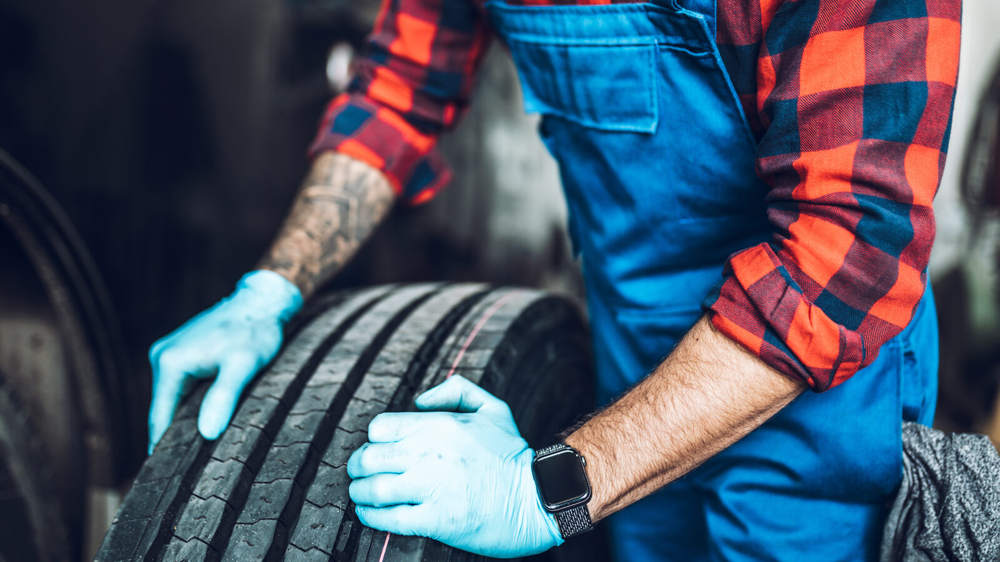

Home / Blog / Turnaround and Spares
IN-HOUSE GUIDETurnaround time decides how many spare tires a fleet must hold. What the trade sources say, what no one publishes, and how to think about it before you start your own line.
Published October 30, 2026 · Good Hope Retreaders

When a tire comes off a truck for retreading, the truck still needs a tire. Where that replacement comes from, and how long the casing is gone, is a cost that rarely shows up in a retread price quote. It is also one of the few things that genuinely changes when a fleet moves from sending casings out to retreading them itself. This guide covers what the trade sources say about turnaround and spares, what nobody seems to publish, and how to reason about it before you commit to a line.
Sourcing note: we could read search-result extracts of the articles below, not their full texts, and we found no published benchmark for average casing turnaround or for how many spares a fleet should hold. The post says so where it matters and does not state figures we could not verify. We also give no fleet example, because we have no real one to share.
A fleet tire-management guide from Oxmaint (vendor content, so read it as guidance rather than research) defines turnaround as the days from removal to return and says it drives how many spare tires you have to hold. That is the whole logic in one line: the longer a casing is away, the more replacement tires have to be sitting ready.
The same kind of guidance describes the difference between fleet sizes. A fleet with spare stock can pull a replacement from inventory when a casing goes out and rotate the retread back into stock afterwards. A smaller fleet without that buffer has vehicles waiting while tires are out for retreading, which is costly. We could not tie that second point to a single named study, so treat it as widely repeated common sense, not a measured result.
A Tire Review article on the retreading market (the extract we saw carried no publication date) quotes a tire-manufacturer executive saying fleets expect a retread supplier to turn work around in about a week, with a quality product at a competitive price. That is a stated expectation, not a measured industry average, and it comes from a tire maker. It is still a useful reference point for what you would be competing with.
Our reasoning, not a published figure:
Again our own arithmetic, with no fleet numbers attached. The spare pool needed to cover retreading is roughly the number of casings leaving the trucks per week multiplied by your turnaround in weeks, plus a margin for casings that fail inspection and for variation in how long a batch takes. Fill in your own removal rate and your own logged turnaround. If your rate is high or your turnaround is long, the pool grows with both, which is why shortening turnaround is worth real money even though it never appears as a line on an invoice.
This is also where the economics in our in-house ROI guide and the casing-life limits in our retread cycles guide connect: spares are inventory, and inventory ties up money. Whether an in-house line shortens or lengthens your turnaround is something only your own data can answer.
Good Hope is a manufacturer-direct supplier of retreading equipment, consumables, components and repair tools, with local service in Ontario and transparent all-in Canadian pricing. We are not a franchisor, and we do not run retread shops for customers. We equip and supply a fleet that wants to run its own. If you send us your tire sizes and an honest estimate of weekly casing volume, we can talk through what size of line fits.
We supply retreading equipment, consumables, components and repair tools from our Ontario warehouse, with transparent all-in Canadian pricing. Tell us your tire sizes and volume and we will help you plan the equipment and supplies for your own line.
Get an equipment quote →Send us your requirements and we'll get back to you within 24 hours with pricing and lead times — no obligation.